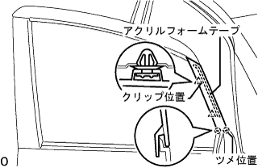
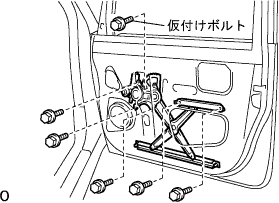

Front door RH assembly |
| 1. Body grease application |
The body grease is applied to the front door wind regulator RH, the front door -out side handle frame RH and the front door motorkirock assocuarque rh sliding portion.
| 2. Front door with the strip RH installation |
 |
Match the clip and attach the front doorway strip RH.
| 3. Front door glass Weather strip assessed |
 |
Push in from the top, match the claws, and attach the front door glass Weather Stritip ASSY OUT RH.
| 4. Installation |
Set the Otariya View Miller on the body and temporarily tighten it with three screws.
Tighten three screws.
| 5. Front door window frame molding FR RH installation |
Vehicle mounting face cleaning (when using a solvent)
Put the protective tape when the acrylic form tape remaining in the body is full.
Use a polybera or dash to apply the remover bond 7 to the acrylic form tape remaining in the body.
Warm the acrylic form tape remaining in the body with an infrared lamp.
Shave the acrylic form tape remaining in the body using a polybera.
Apply the remover bond 7 to the acrylic form tape remaining in the body.
Warm the acrylic form tape remaining in the body with an infrared lamp.
Rub the acrylic form tape remaining in the body with a rag.
Vehicle mounting face cleaning (when using a tape re -move disk)
Put the protective tape full of the acrylic form tape remaining in the body.
Set 8 disks on the holder and attach the remover disk to the air drill or electric drill.
Put on protective glasses and cut off the acrylic form tape.
Clean the adhesive surface with white gasoline.
Front door window frame molding FR RH installation
|  |
Remove the acrylic form tape separate paper, combine the two claws at the bottom and two clips, and attach a new front door window frame molding FR RH.
| 6. Front door window frame molding RR RH installation |
Vehicle mounting face cleaning
Front door window frame molding RR RH installation
Remove the release of the acrylic form tape, combine the four clips, and attach the new front door window frame molding FR RH.
| 7. Front door outdoor handle frame SUB-ASSY RH installation |
Use a torxo wrench (T30) to attach the front door outside handle frame RH with a screw.
| 8. Long -door outside handle assigned installation |
Attach the front door -out side handle pad FR and front door outside handle pad RR to the door panel.
Attach the front door out side handle ASSY RH to the door panel.
Connect the connector.(There is a smart door lock)
| 9. Front door outdoor outside handle cover RH mounting |
 |
Use a torxo wrench (T30) to attach the front door -out side handle cover with the door lock key cylinder attached.
| 10. Front door lock ASSY RH (Motoruki) Installation |
Insert a link of the outside handle frame into the door lock and set it on the front door panel.
Make sure that the link of the outside handle frame is in line with the door lock.
Use a torxo wrench (T30) to attach the front door motor tsukiro Asy RH with three screws.
| 11. Mounting front door frame SUB-ASSY RR LWR RH |
Attach the front door frame RR LWR RH with a screw.
| 12. Mounting on the front door frame SUB-ASSY FR LWR RH |
Attach the front door frame FR LWR RH with a screw.
| 13. Front door glass run RH installation |
| 14. Power window regulator motor Assisted |
Use a torx driver (T20) to assemble the power window regulator motor ASSY RH with three screws.
| 15. Front door window regulator SUB-ASSY RH installation |
Attach the provisional bolt to the window regulator.
Temporarily assemble the window regulator on the door panel.
|  |
Tighten the six bolts and attach the front door window regulator RH.
Connect the connector of the window regaleta.
| 16. Fronted astifna cushion No.1 installation |
Attach the No. 1 front door Stiffuna Cotion with two clips.
| 17. Front door glass SUB-ASSY RH installation |
 |
Connect the regulator master switch and move the window regulator to the position of the figure (the mounting bolt hole can be seen).
Attach the front door glass RH with two bolts.
| 18. Front door service hall cover RH installation |
 |
Paste the butyl tape on the door panel side.
Paste the new front door service hall cover RH.
| 19. Mounting door electrical key Oscillator |
Attach the door electronic oxyurer key with two screws.
| 20. Round door trim bracket No.1 installation |
Attach the front door trim braketto No.1 with two screws.
| 21. Long-door inside handle SUB-ASSY RH installation |
The two claws in front of the vehicle are used.
Attach the front door inside handle with the claws.
Connect the cable.
| 22. Front door glass Weather strip Inn RH installation |
Attach the front door glass weather strip INN RH to the front door trim board RH.
| 23. Front door trim board SUB-ASSY RH installation |
 |
The clip is mixed and the front door trim board RH is assembled on the door panel.
In the screw, attach the front door trim board RH with the front door inside handle RH.
| 24. Installation of door pull handle |
Attach the door -pull handle with a screw.
| 25. Front door router frame bracket garnish RH installation |
 |
The claws and clips are used, and the front door roux frame braketto garanitsui RH is attached.
| 26. Reset the power window reoregar motor |
Reduce the glass switch of each seat (maintained Manual Down or Auto Down) to lower the glass of 1/4 or more.
After the window switch of each seat is UP (AUTO UP), the switch is kept for more than one second after the glass stops.
| 27. Multiplex network Master Switch ASSY installation |
In the screw, attach multi -plattsunetsu to work Mastasutsutsuchi to the front door armrest base panel UPR RH.
Connect the connector.
 |
Match the claws and attach the multi -plattskusune to work Mastasutsutsy to the front door trim board RH.
| 28. Power window operation inspection |
reference